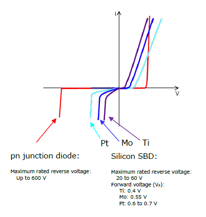
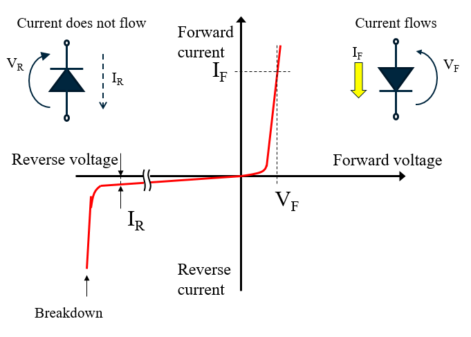
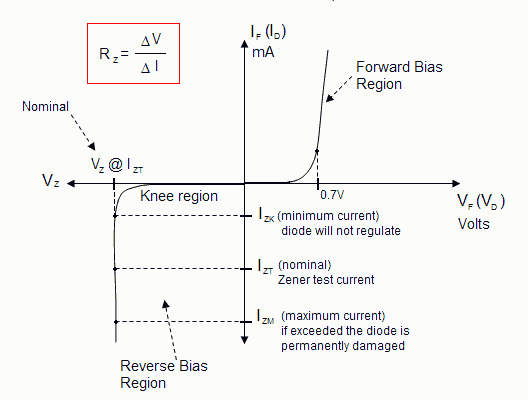
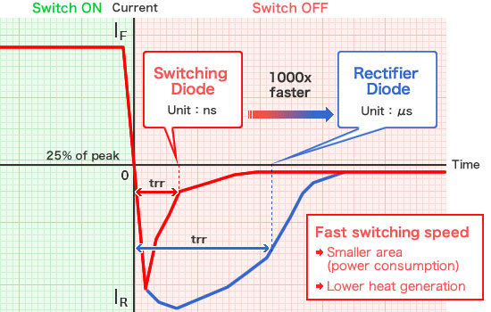
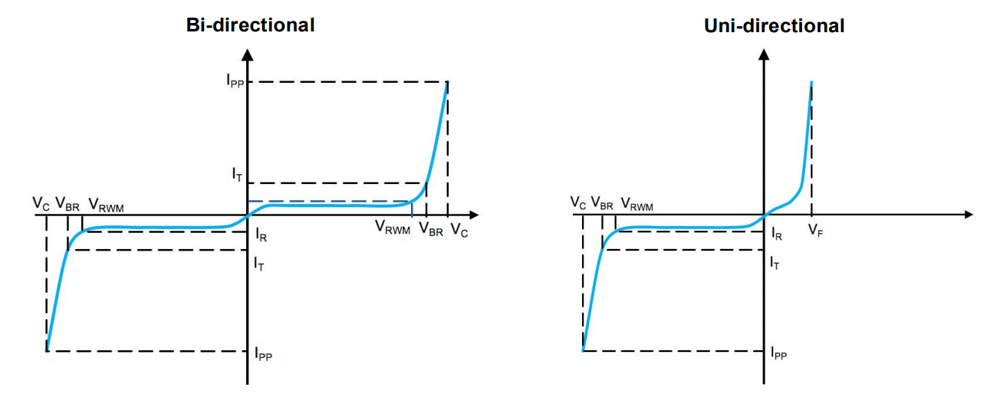
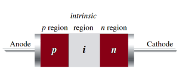
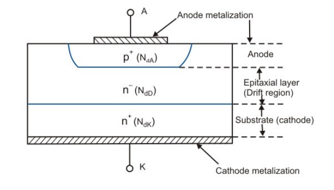
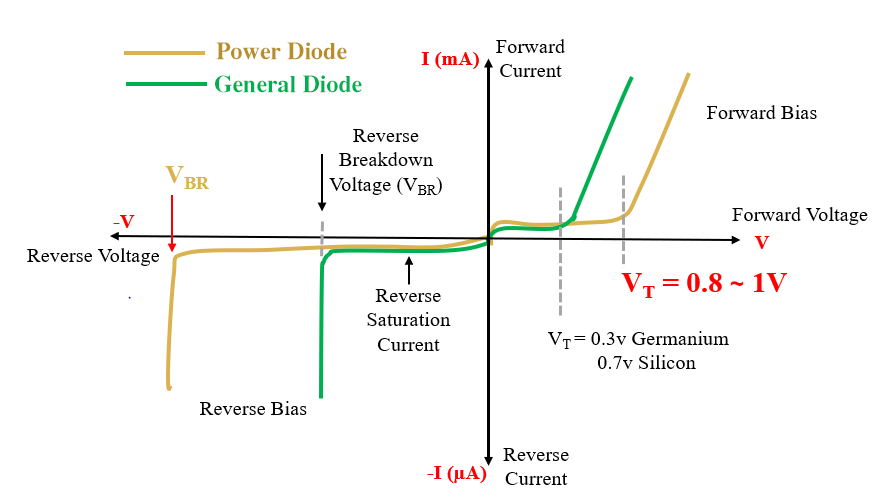
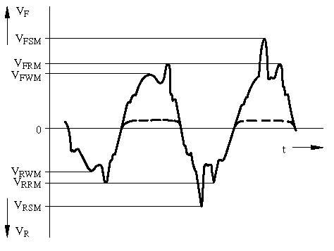

为了更好的描述及参照，以下参数大部分会重复记录，因此不一一重复描述，仅在第一次出现时加以概述。
# 肖特基二极管
简称 "SBD" 。利用金属和半导体二者的接合面的 "肖特基效应" 的整流作用。具有正向导通电压较低，导通恢复时间短的特性，但反向漏电流较多，突波耐受度较低。常见应用于高频整流（低压大电流）。
1、主要参数
- 重复性峰值反向电压 VRRM（Repetitive peak reverse voltage）：即使没有反向电流，只要不断地提高反向电压，迟早会使肖特基二极管损坏。这种能施加的反向电压，不是瞬时电压，而是反复施加的反向电压。一般在直流电压中相当于最大直流反向耐压，而在交流电压中则用另一个参数 VRMS 表示（下方）。
- 平均正向整流电流 IF (AV)（Average forward rectified current）：指肖特基二极管长期运行时，根据允许温升折算出来的平均正向电流峰值。
- 浪涌电流 IFSM（Peak forward surge current）：允许流过的过星的正向电流。它不是正常电流，而是瞬间电流，这个值相当大。
- 导通压降 VF（Instantaneous forward voltage）：VF 为肖特基二极管正向导通时肖特基二极管两端的压降，选择肖特基二极管是尽量选择 VF 较小的肖特基二极管。
- 反向漏电流 IR（DC reverse current）：IR 指在肖特基二极管两端加入反向电压时，流过肖特基二极管的电流，肖特基二极管反向漏电流较大，选择肖特基二极管是尽量选择 IR 较小的肖特基二极管。
2、辅选参数
- 均方根反向电压 VRMS（Root-Mean-Square voltage）：指正弦交流信号的有效电压值，
VRMS = (1/2√2) × VRRM ≈ 0.707 × VRRM；这里主要是指正常情况下工作的最大有效电压值，可以理解为所能承受的最大反复施加的正反向电压有效值。有一些 datasheet 上可能没有提供该参数，但是会提供 VRRM 的参数，所以可以利用公式来获取数值。 - 反向恢复时间 trr（Reverse recovery time）：当工作电压从正向电压变成反向电压时，二极管工作的理想情况是电流能瞬时截止。实际上，一般要延迟一点点时间。决定电流截止延时的量，就是反向恢复时间。虽然它直接影响二极管的开关速度，但不一定说这个值小就好。也即当肖特基二极管由导通突然反向时，反向电流由很大衰减到接近 IR 时所需要的时间。大功率开关管工作在高频开关状态时，此项指标至为重要。
- 工作频率 fM：由于 PN 结的结电容存在，当工作频率超过某一值时，它的单向导电性将变差。肖特基二极管的 fM 值相对于其它二极管来说较高，小体积的肖特基二极管最高可工作在 50GHz 的频率，该参数一般没有提供，因为大部分肖特基二极管的工作频率差异不大。
note：二极管的反向漏电流与反向电压大致呈指数关系，表示为： I = Ir x e^(-Vr/Vt) ，其中 Ir 为常数，代表二极管在反向饱和状态下的最小漏电流； Vr 为反向电压， Vt 为热电压常数，约为 26mV。
由于肖特基二极管反向漏电流较大，并且随温度变化较大，因此当出现反向电压时，往往会导致正向极出现电压（反向电压增大或温度升高），导致 “反向导通” 的现象。

# PN 结二极管
一般也称为 "一般整流二极管"、"普通二极管" 。通过施加正向偏置，利用半导体中 PN 接合的整流性质来实现单向特性的应用，是最基本的半导体二极管。常见应用于低频整流以及与电感并联保护其他器件。
1、主要参数
- 重复性峰值反向电压 VRRM（Repetitive peak reverse voltage）
- 均方根反向电压 VRMS（Root-Mean-Square voltage）
- 平均正向整流电流 IF (AV)（Average forward rectified current）：可以理解为额定工作电流。
- 导通压降 VF（Instantaneous forward voltage）
- 浪涌电流 IFSM（Peak forward surge current）
2、辅选参数
- 直流阻断电压 VDC（DC blocking voltage）：当直流电压大于该参数电压，将会导致二极管击穿或烧毁。
- 反向漏电流 IR（DC reverse current）：当施加安全的反向电压时，二极管处于反向截止状态，但此时会有一个反向的电流泄漏。

# 齐纳二极管
一般也称为 "稳压二极管" 。是利用二极管在反向电压作用下的齐纳击穿（崩溃）效应，制造而成的一种具有稳定电压功能的电子技术器件。齐纳二极管的正向偏置和一般二极管相同，但是其反向击穿电压（又称齐纳电压）的范围远大于一般的二极管，能承受比一般二极管更高的电压，而且齐纳二极管的反向电压操作是可逆的；常见的齐纳电压从 3 伏特到 100 伏特。常见应用于直流稳压。
1、主要参数
- 稳压值 VZ（Zener voltage range）：理想稳压管的稳压值是一个固定的电压数值，但实际真实稳压管的稳定电压会在一定范围波动，有些型号的稳压管应用手册中会给出标称稳定电压值，最小稳定电压值和最大稳定电压值，但也有些手册中只给出标称稳定电压值。该值一般是一个范围值，并且处在一定的 IZT 条件下才符合，因此大多标识为
VZ@IZT。 - 典型工作电流 IZT（Typical operating current）：也称为额定工作电流；额定工作电流是指稳压管可以长时间稳定工作，并且稳压性能最好时对应的工作电流值。
- 功率消耗 PD（Power dissipation）：最大耗散功率是指可以稳定工作的最大功率值，在工作电路中稳压管的功率不应超过这个值。
- 动态阻抗 ZZT and ZZK（Dynamic impedance）：由于 IZT 和 IZK 的存在，所以也分成了 ZZT 和 ZZK；一般写成
ZZT@IZT和ZZK@IZK，分别表示在额定电流工作时的阻抗 ZZT 及在最小稳压电流时的阻抗 ZZK。稳压管的动态电阻等于电压变化与电流变化的比值。动态电阻越小稳压效果越好，这是因为动态电阻小，则相同电流变化引起的电压变化就越小，所以电压就越稳定。从稳压管的反向伏安特性可以看出，稳压管的工作电流越接近最大稳定工作电流则动态电阻越小，越接近最小工作电流则动态电阻越大。所以稳压管工作电流接近最大稳定工作电流时稳压效果才好。
2、辅选参数
- 膝点电流 IZK（Knee-point operating current）：即拐点电流，也称为稳压的最小电流；最小稳定工作电流是指可以使稳压管具有稳压功能的最小工作电流，如果稳压管电流小于这个值，会进入反向截止区，在反向截止区稳压管是没有稳压功能的。
- 最大工作电流 IZM（Maximum operating current）：如果稳压管超过该电流则有烧毁危险。
- 反向电压 VR（Reverse voltage）：一般是给 IR 值作参考，表示在未进入稳压状态下的最大反向电压，并且小于 VZ。
- 反向漏电流 IR（DC reverse current）：一般标识为
IR@VR，表示电压处于 VR 时 IR 的值，而此时的 VR 是 小于 VZ 的，因此并不能击穿齐纳管得到恒定的电压，这时就相当于一个反向阻断的普通二极管（可以看作不导通），但还是会有 IR 的漏电流。

# 开关二极管
一般也称为 "小信号二极管" 。它是专门为电路上的 “开” 和 “关” 而设计和制造的，顾名思义，就是指具有开关功能的二极管。该二极管具有在正向施加电压时通过电流 (ON) 和在反向施加电压时停止 (OFF) 电流的性能。与其它二极管相比，反向恢复时间较短，即开关二极管从导通状态到完全关断状态所用的时间较短。常见应用于开关电路。
开关二极管跟肖特基二极管很像，都具有反向恢复时间短的特性；但不同的是：
开关二极管反向漏电流较低，更适用于需要截止状态下的高阻值应用。
开关二极管反向耐压相对较高，一般开关二极管反向耐压会在 60 伏特以上至 100 多伏特；而肖特基二极管大部分反向耐压在 60 伏特以下、20 伏特以上。
开关二极管峰值正向电流较低，一般都是毫安级别，而肖特基二极管峰值正向电流可达安培级别。
1、主要参数
- 重复性峰值反向电压 VRRM（Repetitive peak reverse voltage）
- 平均正向整流电流 IF (AV)（Average forward rectified current）
- 浪涌电流 IFSM（Peak forward surge current）
- 功率消耗 PD（Power dissipation）
- 均方根反向电压 VRMS（Root-Mean-Square voltage）
- 反向恢复时间 trr（Reverse recovery time）
2、辅选参数
- 导通压降 VF（Instantaneous forward voltage）
- 反向漏电流 IR（DC reverse current）

# 瞬态抑制二极管
一般也称为 "TVS 管" 。是一种用于过电压保护和 ESD 保护的器件，主要应用于保护后段的 IC 免受由静电和电源波动引起的意外过电压和浪涌。
1、主要参数
- 反向峰值工作电压 VRWM（Reverse stand-off voltage）：也称为反向关断电压。指设备可以连续承受的电压，没有雪崩破裂的危险。
- 击穿电压 VBR（Breakdown voltage）：完全导通的电压阈值。
- 箝位电压 VC（Clamping Voltage）：在脉冲峰值电流 Ipp 作用下器件两端的最大电压。
- 峰值脉冲电流 IPP（Peak pulse current）
- 反向漏电流 IR（DC reverse current）
- 典型结电容 Cj （Typical Junction Capacitance）：一般在图中可找到线性参数。
2、辅选参数
- 测试电流 IT （Test Current）：结合图形查看参考。
- 峰值脉冲功耗 PPPM（Peak pulse power dissipation）：定义为设备在给定脉冲条件下消耗的瞬时功率，并且是在给定瞬态事件期间 TVS 结中消耗的功率的度量。它通过以下关系式计算：
PPPM = VC x IPP，其中 PPPM = 峰值脉冲功耗（W），VC = 箝位电压（V），IPP = 峰值脉冲电流（A）。

note：挑选 TVS 管先看 VRWM，尽可能与最大工作电压接近，直流大概是 1.1~1.2 倍的最大工作电压，交流是 1.4~1.5 倍的最大工作电压；一般 VBR = VRWM / (0.8~0.9)；然后 VC 不高于被保护器件的最大允许安全电压；Cj 要尽量小，此值会影响 TVS 的响应时间；IR 也要尽量小，避免影响到静态电流及电流倒灌；交流电压只能用双向 TVS。
# PIN 型二极管
即在 P 型材料与 N 型材料中间插入一层低掺杂纯度的接近于本征半导体材料所组成的 I （Intrinsic）层。由于 I 层的存在，PIN 型二极管通常比普通的二极管拥有更宽的耗尽层，更大的接面电阻和更小的接面电容。常见应用于 RF 领域、光电探测器及高压整流器（如 FRD/SRD）。

常用参数（不同种类参考相应的参数）
- 平均正向整流电流 IF (AV)（Average forward rectified current）
- 典型结电容 Cj （Typical Junction Capacitance）
- 等效串联电阻 RS（Series resistance）：当二极管正向导通时，可以理解为串联了一个电阻，该值则为等效串联电阻阻值。一般出现在 RF 种类中，它可以量化电容对 RF 电流的有效电阻。
- 反向电压 VR（Reverse voltage）
- 功率消耗 PD（Power dissipation）
- 导通压降 VF（Instantaneous forward voltage）
# 快恢复 / 超快恢复二极管
简称 "FRD/SRD" 。与常见的二极管不同，它是在 P 型、N 型材料中间增加了基区 I ，构成 P-I-N 结构，属 PIN 型二极管的一种；因基区很薄，反向恢复电荷很小，不仅大大减小了 trr 值，还降低了瞬态正向压降，使管子能承受很高的反向工作电压。常见应用于开关电源、PWM 脉宽调制器及变频器。
1、主要参数
- 重复性峰值反向电压 VRRM（Repetitive peak reverse voltage）
- 平均正向整流电流 IF (AV)（Average forward rectified current）
- 浪涌电流 IFSM（Peak forward surge current）
- 导通压降 VF（Instantaneous forward voltage）
- 反向漏电流 IR（DC reverse current）
- 反向恢复时间 trr（Reverse recovery time）
2、辅选参数
- 均方根反向电压 VRMS（Root-Mean-Square voltage）
- 直流阻断电压 VDC（DC blocking voltage）

# 功率二极管
功率二极管由重掺杂纯度的 N+ 层构成阴极，其上有一个轻掺杂的 N- 层外延包夹在重掺杂的 P+ 阳极层上，它们的交界处形成 PN 结，而这个外延 N- 层被称为漂移层。功率二极管与一般的二极管相比，具有更大的 PN 结面积，从而具有高达数百安培 (KA) 的高正向电流能力和高达数千伏 (KV) 的反向阻断电压。

主要要求：
- 反向电压 VR 越高越好。
- 导通压降 VF 尽可能低。
- 关闭速度尽可能快。
- 反向恢复时间 trr 越低越好。
1、主要参数
- 重复性峰值反向电压 VRRM（Repetitive peak reverse voltage）
- 均方根反向电压 VRMS（Root-Mean-Square voltage）
- 平均正向整流电流 IF (AV)（Average forward rectified current）
- 浪涌电流 IFSM（Peak forward surge current）
- 工作温结 TJ（Operating junction temperature）：是指电子设备中半导体的最高工作温度。在操作中，它通常较封装外壳温度（Case temperature）高。
2、辅选参数
- 导通压降 VF（Instantaneous forward voltage）
- 反向漏电流 IR（DC reverse current）
- 反向恢复时间 trr（Reverse recovery time）
- 典型结电容 Cj （Typical Junction Capacitance）

参考：
https://www.uv.es/marinjl/electro/diodo.html
https://quick-learn.in/power-diode-structure-types-characteristics/
https://www.idc-online.com/technical_references/pdfs/electrical_engineering/Constructional_Features_Operating_Principle_Characteristics_and_Specification_of_Power_Semiconductor_Diode.pdf
https://www.taiwansemi.com/assets/uploads/productcategoryfile/AN-1006_%E5%8A%9F%E7%8E%87%E4%BA%8C%E6%9E%81%E7%AE%A1%E5%8F%82%E6%95%B0%E5%8F%8A%E7%89%B9%E6%80%A7%E4%BB%8B%E7%BB%8D_A2012.pdf
# 信号二极管
信号二极管可以说是一种大类型，其实上面的肖特基、普通的 PN、开关这些二极管有部分可称为信号二极管，它们之间存在着交集。因此选择参数只需选取适合的即可，这里就不去阐述了，看以下参考吧：
The Signal Diode
What are signal diodes?
Signal Diode Vs Rectifier Diode
Signal Diode Rectifier Diode Signal diodes are used in lower voltage or lower current lanes of the circuit. Rectifier diodes are used in power supplies. These diodes can handle the less forward current. These diodes can handle more forward currents. These diodes can be designed with semiconductor materials like Ge, Si, and GaAs. These diodes are made from a silicon material. Signal Diode Vs Power Diode
Signal Diode Power Diode It constitutes a simple P-N junction with equal doping of P and N layer. Power Diode consists of heavily doped n+, a lightly doped n– layer which is epitaxially grown on a heavily doped P+ layer. Signal diode doesn’t block higher reverse voltage due to absence of drift region. Power diode consists of drift region. Presence of drift region makes power diode capable of blocking higher reverse voltage. It has lower Voltage, Current and Power rating. It has higher Voltage, Current and Power rating. It has lower switching speed. It has higher switching speed. Signal diodes have a lower forward voltage drop, which makes them more suitable for low-power applications. Power diodes have a higher forward voltage drop than signal diodes. This means that more energy is required to turn them on, and they dissipate more power when conducting. Signal diodes occupies less space as it comes in smaller sizes. Power diodes are usually larger in size than signal diodes. This is because they need to handle higher current levels, which requires more material and space. Signal diodes are suitable for low temperature ranges. Power diodes are often rated for higher temperature ranges than signal diodes. This is because they dissipate more power and generate more heat during operation. Signal diodes are used in low-power applications such as signal detection, clipping, and switching. Power diodes are used in power supplies, rectifiers, and other high-current applications. Signal Diode Vs Small Signal Diode
Signal Diode Small Signal Diode The construction of a signal diode is similar to the Mesa diode. The construction of a small signal diode is similar to a PN junction diode. It functions on high-voltage signals. It functions on low-voltage signals. Its junction area is high as compared to the small-signal diode. Its junction area is very small, so it stores less charge and has low capacitance. Signal diodes are used to operate small currents & high-frequency signals. These diodes also operate the same as a signal diode. These diodes are frequently used in TV, radio, switching circuits, and communication applications. These diodes are applicable in parametric amplifiers, high-speed switching & general purpose diode applications.
# 拓展
VRWM、VRRM、VRSM 及 VBR 参数关系

- 反向峰值工作电压 (VRWM)：设备可以连续承受的电压，没有雪崩破裂的危险。
- 重复性峰值反向电压 (VRRM)：它可以在 1 毫秒的峰值内持续，每 10 毫秒连续重复一次。
- 非重复性峰值反电压 (VRSM)：也称为浪涌电压；每 10 分钟或更长时间只能支持 10ms 一次。
- 击穿电压 (VBR)：如果达到该值，即使只有一次，在 10 毫秒内，二极管可能会破坏或降低其特性。
- 通常是 VBR > VRSM > VRRM > VRWM。
# 相关资料
https://www.electronicshub.org/diodes/
https://www.electronics-tutorials.ws/category/diode
https://www.rohm.com.cn/electronics-basics/diodes
https://www.shindengen.com/products/semi/column/basic/diodes/diode.html